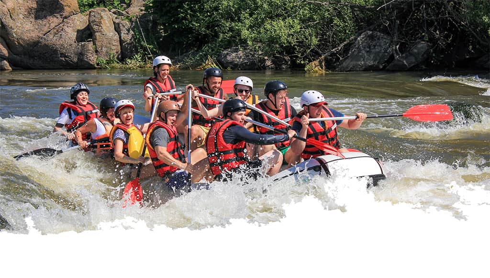

Rio Abaixo Rafting
Nossa missão é gerar emoções inesquecíveis conectando pessoas à natureza através de experiências seguras, emocionantes e inesquecíveis. Valorizamos a aventura com responsabilidade e respeito ao meio ambiente, trabalho em equipe e apreciação da natureza. Viva a energia das corredeiras com os melhores guias e um atendimento humanizado!